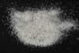

|
|
(For further information on spectroscopy, see:
http://speclab.cr.usgs.gov)
TITLE: Anorthite HS201 Plagioclase DESCRIPT
DOCUMENTATION_FORMAT: MINERAL
SAMPLE_ID: HS201
MINERAL_TYPE: Tectosilicate
MINERAL: Anorthite (Plagioclase, Ca end member, Feldspar group)
FORMULA: CaAl2Si2O8
FORMULA_HTML: CaAl2Si2O8
COLLECTION_LOCALITY: Japan
ORIGINAL_DONOR: Hunt and Salisbury Collection
CURRENT_SAMPLE_LOCATION: USGS Denver Spectroscopy Laboratory
ULTIMATE_SAMPLE_LOCATION: USGS Denver Spectroscopy Laboratory
SAMPLE_DESCRIPTION:
The original sample and vis-nir spectrum was described in:
Hunt, G.R., J.W. Salisbury, and C.J. Lenhoff, 1973, Visible and near-infrared spectra of minerals and rocks: VI. Additional silicates. Modern Geology, v. 4, p. 85-106.
However, the sample measured here was purified using a Franz separator and hand picked by Gregg Swayze. The resulting sample and spectrum appear pure (see microscopic examination).
IMAGE_OF_SAMPLE:

END_SAMPLE_DESCRIPTION.
XRD_ANALYSIS:
40 kV - 30 mA, 6.5-9.5 keV
File: anort201_mdi, *.out (smear mount on quartz plate)
References: J.V. Smith (198-), p.212-3
Found: Calcic- plagioclase consistent with anorthite
Comment: Strong, narrow reflections indicate excellent crystallinity and
compositional heterogeneity. This pattern demonstrates the resolving power of the
powder diffractometer method.
END_XRD_ANALYSIS.
COMPOSITIONAL_ANALYSIS_TYPE: None # XRF, EM(WDS), ICP(Trace), WChem
COMPOSITION_TRACE: None
COMPOSITION_DISCUSSION:
END_COMPOSITION_DISCUSSION.
MICROSCOPIC_EXAMINATION:
END_MICROSCOPIC_EXAMINATION.
SPECTROSCOPIC_DISCUSSION:
END_SPECTROSCOPIC_DISCUSSION.
SPECTRAL_PURITY: 1a2a3a4_ # 1= 0.2-3, 2= 1.5-6, 3= 6-25, 4= 20-150 microns
| LIB_SPECTRA_HED: | where | Wave Range | Av_Rs_Pwr | Comment |
|---|---|---|---|---|
| LIB_SPECTRA: | splib04a r 467 | 0.2-3.0µm | 200 | g.s.= 76 µm |
| LIB_SPECTRA: | splib05a r 1087 | 0.2-3.0µm | 200 | g.s.= |
| LIB_SPECTRA: | splib06a r 2613 | g.s.= | ||
| LIB_SPECTRA: | splib06a r 2625 | g.s.= |
{kind=link}